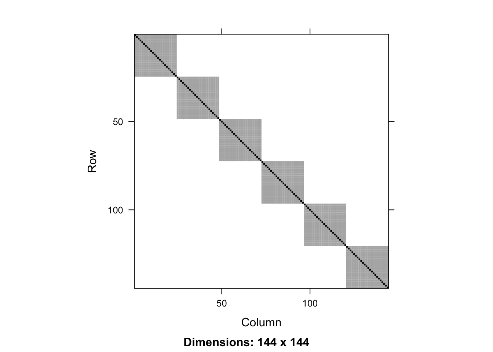
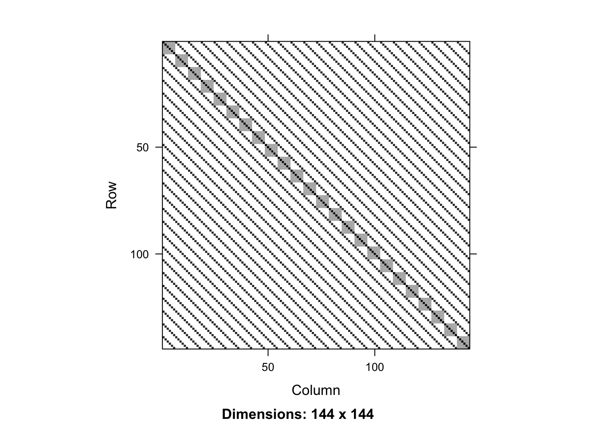
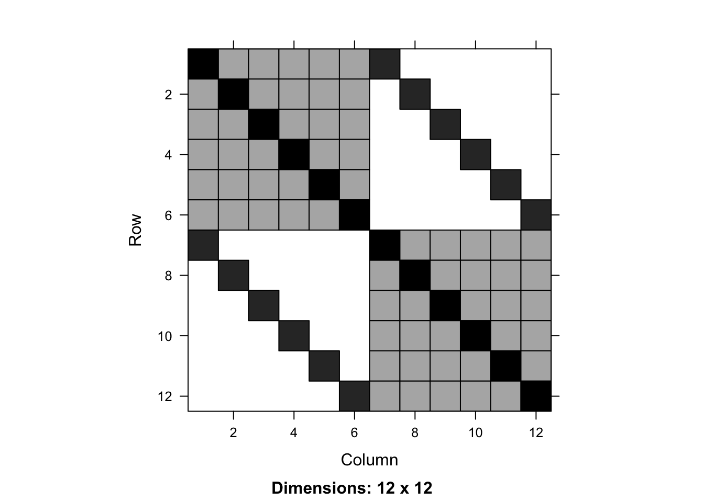
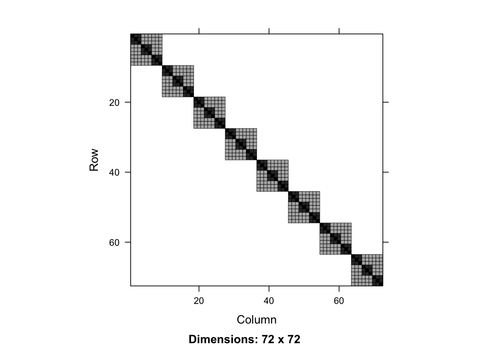
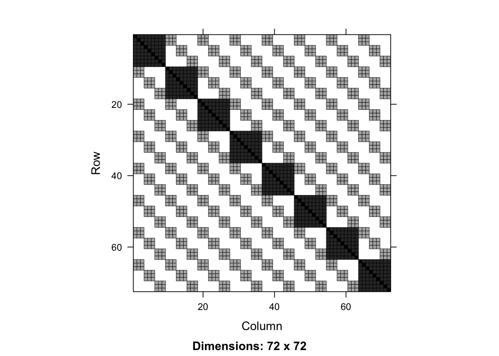

rescov <- function(model, data) {
var.d <- crossprod(getME(model,"Lambdat"))
Zt <- getME(model,"Zt")
vr <- sigma(model)^2
var.b <- vr*(t(Zt) %*% var.d %*% Zt)
sI <- vr * Diagonal(nrow(data))
var.y <- var.b + sI
invisible(var.y)
}Visualizing Nested and Cross Random Effects
Random Effects
One way to think about random intercepts in a mixed models is the impact they will have on the residual covariance matrix. Of course, in a model with only fixed effects (e.g. lm), the residual covariance matrix is diagonal as each observation is assumed independent. In mixed models, there is a dependence structure across observations, so the residual covariance matrix will no longer be diagonal.
Nested versus Crossed
Whether random effects are nested or crossed1 is a property of the data, not the model. However, when fitting the model, effects can be included as either nested or crossed.
Nested random effects are when each member of one group is contained entirely within a single unit of another group. The canonical example is students in classrooms; you may have repeated measures per student, but each student belongs to a single classroom (assuming no reassignments).
Crossed random effects are when this nesting is not true. An example would be different seeds and different fields used for planting crops. Seeds of the same type can be planted in different fields, and each field can have multiple seeds in it.
The visualization function
This function extracts components of the mixed model and constructs the covariance matrix. From https://stackoverflow.com/a/45655597/905101
Single random effect
The data is Penicillin from the “lmer” package.
library(lme4)
data(Penicillin)
head(Penicillin, 10) diameter plate sample
1 27 a A
2 23 a B
3 26 a C
4 23 a D
5 23 a E
6 21 a F
7 27 b A
8 23 b B
9 26 b C
10 23 b DThis data is measuring Penicillin over a number of different trials. There are 24 plates and 6 samples, each plate having 1 replicate from each sample. (This is a fully crossed design, but it need not be.)
For the time being, let’s ignore the plate level effects, and fit a model with a random intercept only for sample.
In this data there are no covariates to enter as fixed effects, but their existence would not impede things.
mod1 <- lmer(diameter ~ 1 + (1 | sample), data = Penicillin %>% arrange(sample))
rc1 <- rescov(mod1, Penicillin)
image(rc1)
(The data is re-ordered by sample to improve visualization. You generally want the data sorted first by the higher level, then within that level, the next highest level, etc.)
You see that this is block diagonal, with 6 blocks, each corresponding to one of the samples. This implies that the repeated measurements within each sample is correlated, but between samples are not correlated (as we expect).
Cross random effects
Now let’s refit the above model, including the crossed random effets. In lmer, we simply add a second random intercept.
mod2 <- lmer(diameter ~ 1 + (1 | sample) + (1 | plate), data = Penicillin)
rc2 <- rescov(mod2, Penicillin)
image(rc2)
We see an additional pattern here. It can be hard to interpret at such a high level, so let’s zoom in.
image(rc2[1:12, 1:12])
The diagonal blocks represents the correlation across plates - here we see the first 2 (of total 24). The diagonal lines represent the sample correlations. This subset of covariance matrix is represented by this data:
head(Penicillin, 12) diameter plate sample
1 27 a A
2 23 a B
3 26 a C
4 23 a D
5 23 a E
6 21 a F
7 27 b A
8 23 b B
9 26 b C
10 23 b D
11 23 b E
12 21 b FWe see that observations 1 and 7 share the same sample “A”, 2 and 8 share the same sample “B”, etc. These entries are non-zero in the covariance matrix.
Nested random effects
Now lets view a nested random effect. We’ll switch to the Oxide data from “nlme”.
data(Oxide, package = "nlme")
head(Oxide, 12)Grouped Data: Thickness ~ 1 | Lot/Wafer
Source Lot Wafer Site Thickness
1 1 1 1 1 2006
2 1 1 1 2 1999
3 1 1 1 3 2007
4 1 1 2 1 1980
5 1 1 2 2 1988
6 1 1 2 3 1982
7 1 1 3 1 2000
8 1 1 3 2 1998
9 1 1 3 3 2007
10 1 2 1 1 1991
11 1 2 1 2 1990
12 1 2 1 3 1988We’ll ignore the Source (there are only two) and instead focus on lots and wafers. There are 8 different lots, and within each lot there are 3 wafers. Three measurements are made on each Wafer (the Site variable) of the Thickness.
Here Wafer is nested inside Lot.
mod3 <- lmer(Thickness ~ 1 + (1|Lot/Wafer), data = Oxide)
rc3 <- rescov(mod3, Oxide)
image(rc3)
This is much cleaner as opposed to the crossed example. Each of the 8 larger blocks represents the correlations within each Lot, and the 3 smaller darker blocks within represent the additional correlation within each Wafer.
What would the covariance matrix look like if we had crossed effects rather than nested?
mod3b <- lmer(Thickness ~ 1 + (1|Lot) + (1|Wafer), data = Oxide)
rc3b <- rescov(mod3b, Oxide)
image(rc3b)
Because the wafers within each lot are named the same, we have spurious correlations.
Equivalency of cross and nested random effects
As mentioned above, nested effects are an attribute of the data, not the model. We can include nested random effects using the cross effects syntax. In other words, for a nested structure, there is an equivalent crossed structure. (The reverse is not true.)
The key is that the Wafer levels must be unique in the data, not just within each lot. Let’s generate a unique version of wafer.
Oxide <- mutate(Oxide, Wafer2 = as.numeric(paste0(Lot, Wafer)))
head(Oxide, 12)Grouped Data: Thickness ~ 1 | Lot/Wafer
Source Lot Wafer Site Thickness Wafer2
1 1 1 1 1 2006 11
2 1 1 1 2 1999 11
3 1 1 1 3 2007 11
4 1 1 2 1 1980 12
5 1 1 2 2 1988 12
6 1 1 2 3 1982 12
7 1 1 3 1 2000 13
8 1 1 3 2 1998 13
9 1 1 3 3 2007 13
10 1 2 1 1 1991 21
11 1 2 1 2 1990 21
12 1 2 1 3 1988 21Let’s check that this didn’t break the nested structure.
mod4 <- lmer(Thickness ~ 1 + (1|Lot/Wafer2), data = Oxide)
summary(mod3)Linear mixed model fit by REML ['lmerMod']
Formula: Thickness ~ 1 + (1 | Lot/Wafer)
Data: Oxide
REML criterion at convergence: 454
Scaled residuals:
Min 1Q Median 3Q Max
-1.8746 -0.4991 0.1047 0.5510 1.7922
Random effects:
Groups Name Variance Std.Dev.
Wafer:Lot (Intercept) 35.87 5.989
Lot (Intercept) 129.91 11.398
Residual 12.57 3.545
Number of obs: 72, groups: Wafer:Lot, 24; Lot, 8
Fixed effects:
Estimate Std. Error t value
(Intercept) 2000.153 4.232 472.6summary(mod4)Linear mixed model fit by REML ['lmerMod']
Formula: Thickness ~ 1 + (1 | Lot/Wafer2)
Data: Oxide
REML criterion at convergence: 454
Scaled residuals:
Min 1Q Median 3Q Max
-1.8746 -0.4991 0.1047 0.5510 1.7922
Random effects:
Groups Name Variance Std.Dev.
Wafer2:Lot (Intercept) 35.87 5.989
Lot (Intercept) 129.91 11.398
Residual 12.57 3.545
Number of obs: 72, groups: Wafer2:Lot, 24; Lot, 8
Fixed effects:
Estimate Std. Error t value
(Intercept) 2000.153 4.232 472.6We saw before that adding crossed random effects with Lot and Wafer was not the same as nested. However, with Lot and Wafer2…
mod4b <- lmer(Thickness ~ 1 + (1|Lot) + (1|Wafer2), data = Oxide)
summary(mod4b)Linear mixed model fit by REML ['lmerMod']
Formula: Thickness ~ 1 + (1 | Lot) + (1 | Wafer2)
Data: Oxide
REML criterion at convergence: 454
Scaled residuals:
Min 1Q Median 3Q Max
-1.8746 -0.4991 0.1047 0.5510 1.7922
Random effects:
Groups Name Variance Std.Dev.
Wafer2 (Intercept) 35.87 5.989
Lot (Intercept) 129.91 11.398
Residual 12.57 3.545
Number of obs: 72, groups: Wafer2, 24; Lot, 8
Fixed effects:
Estimate Std. Error t value
(Intercept) 2000.153 4.232 472.6rc4b <- rescov(mod4b, Oxide)
image(rc4b)Summary
As long as the the levels of the nested variable are unique across the data as opposed to unique within each of the nesting variable, nested effects and crossed effects are identical. There’s a very nice visualization of this found in this thread: https://stats.stackexchange.com/questions/228800/crossed-vs-nested-random-effects-how-do-they-differ-and-how-are-they-specified
With this naming convention, nested and fixed effects will be different:

With this naming convention, nested and fixed effects will be equivalent:

Footnotes
“Crossed” simply means non-nested.↩︎